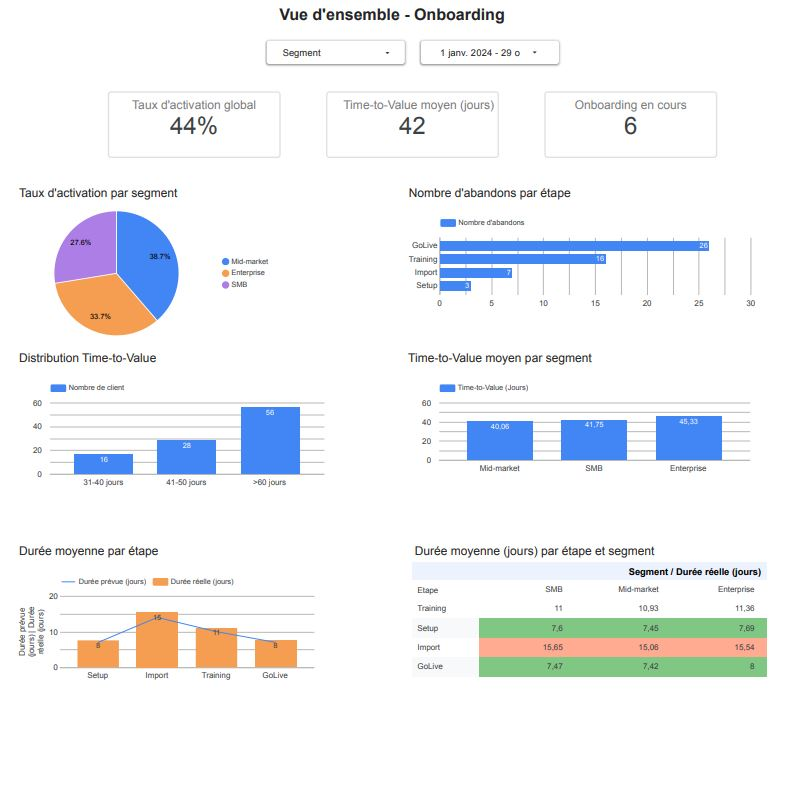
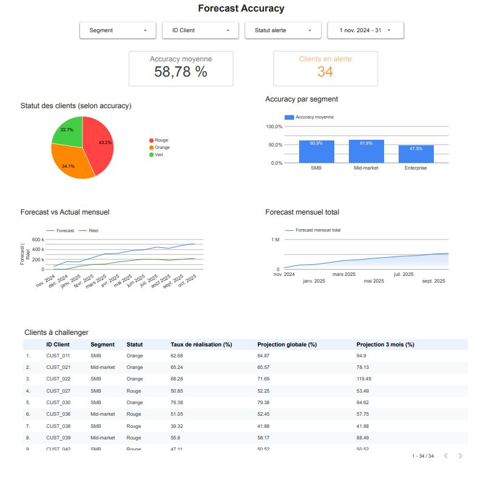

🎯 Contexte & Objectif
Les équipes Customer Success font face à 3 problèmes critiques :
🔴 Churn invisible pendant l'onboarding
Vous découvrez que le client a abandonné 3 semaines après. Trop tard pour intervenir.
Impact :
Perte de revenus + mauvais bouche-à-oreille
📊 Forecast accuracy imprévisible
Vos prévisions de revenue sont fausses à 40%. Impossible de planifier les investissements CS.
Impact :
Décisions à l'aveugle + stress de la direction
❓ Aucune visibilité sur où investir
Vous ne savez pas quelle étape d'onboarding bloque. Vous ne savez pas quels clients prioriser.
Impact :
Budget CS mal alloué + opportunités d'amélioration ratées
Page 1 : Onboarding Performance
Ce que vous voyez : Taux d'activation par segment (SMB, Mid-market, Enterprise), où les clients abandonnent (Setup ? Import ? Training ? GoLive ?), Time-to-Value moyen global et par segment, durée réelle vs durée attendue pour chaque étape.

Ce que vous faites avec :
-
Identifier les segments qui peinent : Les SMB activent 15% moins que les Entreprises ? Ajustez votre parcours d'onboarding pour ce segment spécifiquement.
-
Détecter les étapes bloquantes : 70% des abandons se produisent à l'étape "Import" ? Investissez dans la simplification de cette phase ou dans du support dédié.
-
Réduire le Time-to-Value : Votre TTV moyen est de 45 jours mais les meilleurs clients activent en 30 jours ? Identifiez ce qu'ils font différemment et répliquez les bonnes pratiques.
Page 2 : Forecast Accuracy
Ce que vous voyez : 34 clients en alerte (Rouge/Orange) classés par priorité, pour chaque client : Taux de réalisation, Projection globale, Projection 3 mois, Forecast accuracy par segment, Évolution Forecast vs Actual dans le temps.

Ce que vous faites avec :
-
Prioriser les interventions CSM : Le tableau classe les 34 clients en alerte par taux de réalisation croissant. Vous savez exactement qui appeler cette semaine, par ordre de priorité.
-
Identifier les accélérations et ralentissements : Projection 3 mois > Projection globale → Le client accélère (accompagnez l'opportunité d'upsell). Projection 3 mois < Projection globale → Le client ralentit (intervention urgente).
-
Justifier vos investissements CS : Votre CEO challenge le budget CS ? Montrez-lui comment l'intervention proactive sur les clients Orange améliore leur projection et réduit le churn.
⚙️ Mise en place
Process :
-
Audit de vos données (2-3 jours) : J'analyse vos sources actuelles (Salesforce, Stripe, CRM, etc.)
-
Connexion des sources (3-5 jours) : Je branche vos outils et configure les flux de données
-
Création du dashboard (5-8 jours) : Design des visualisations, configuration des métriques et alertes
-
Formation de l'équipe (1-2 jours) : Je forme vos CSM à l'utilisation du dashboard
Durée totale : 3-4 semaines